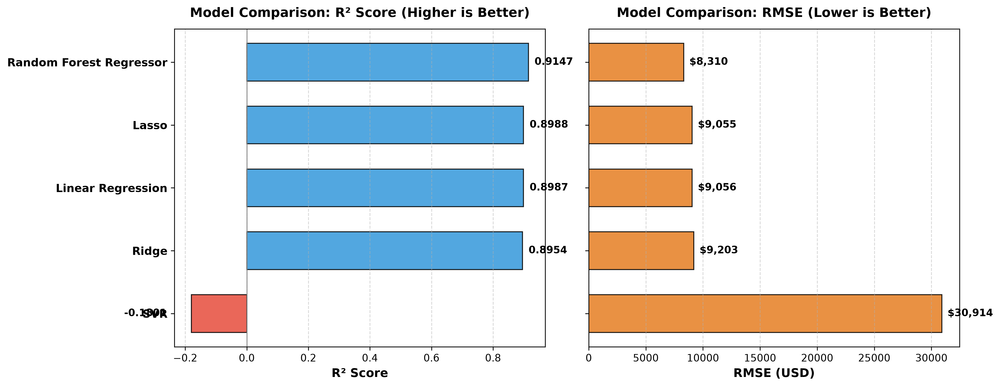
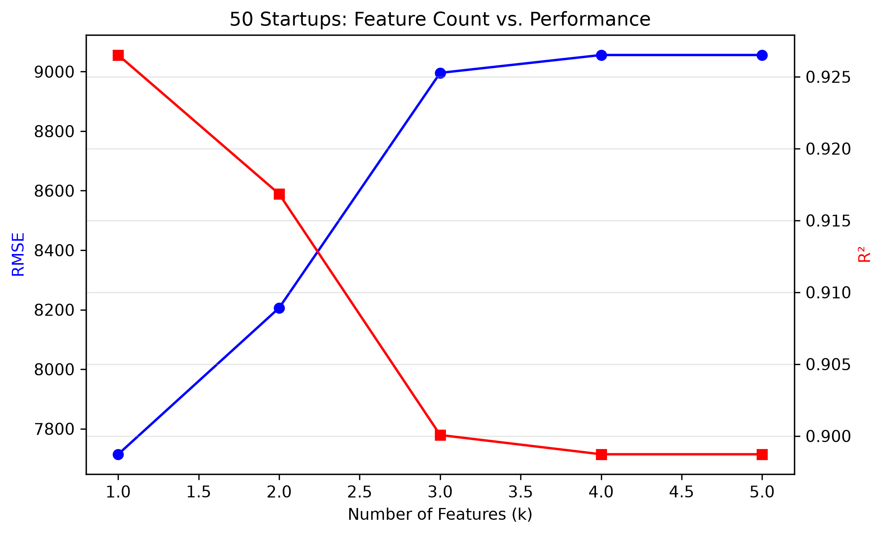
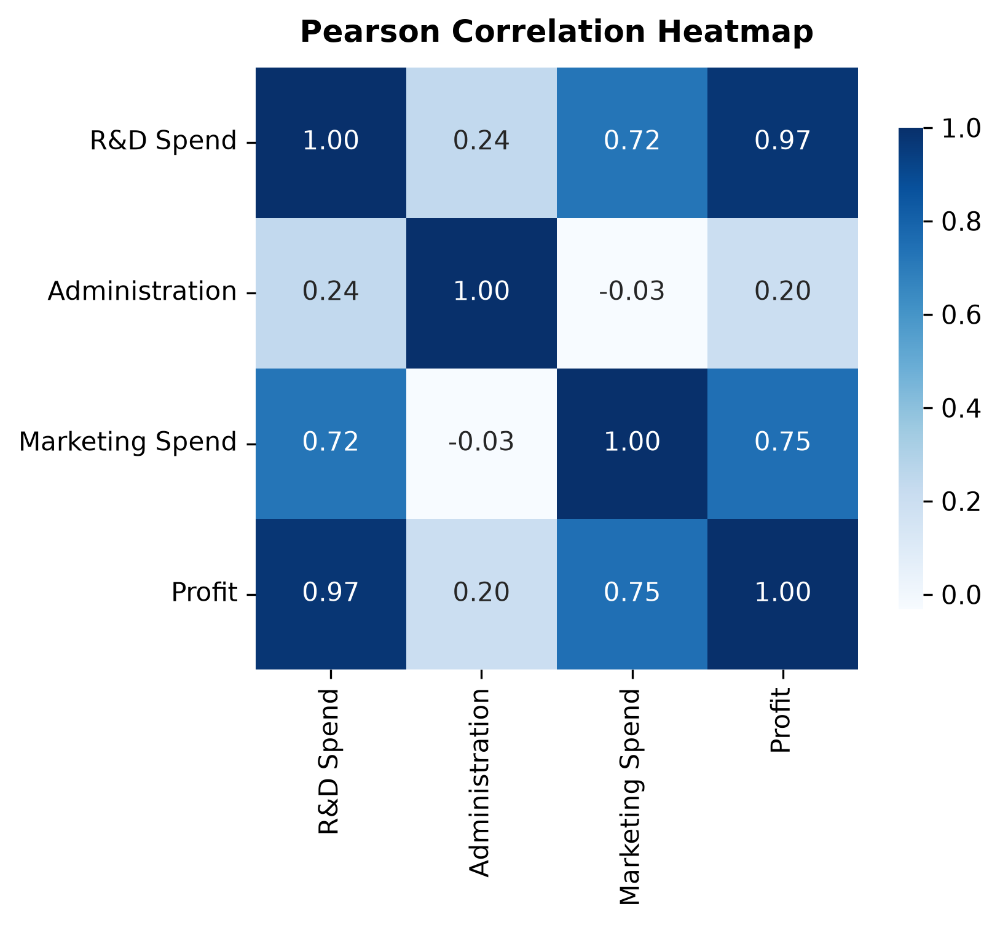
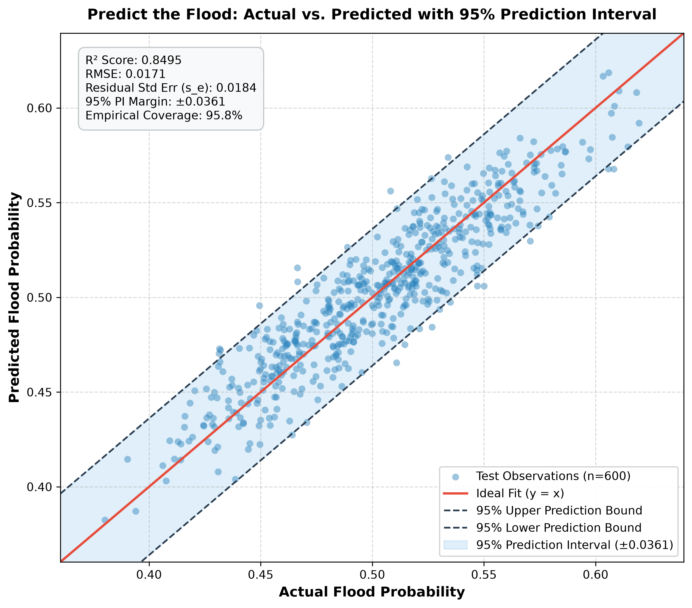
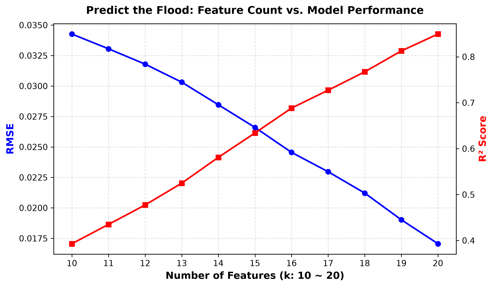

新創公司財務與地點參數
One-Hot Encoding 已啟用 drop='first' 規避虛擬變數陷阱。
此數值由前端 JavaScript 直出，套用後端 Standard Scaler 統計平均值與回歸係數矩陣。
商業決策與權重洞察
依據訓練集權重分析，R&D Spend（研發支出） 標準化係數達 +38,102.27，對利潤呈壓倒性正向驅動（每增加 1 個標準差支出，利潤提升約 $38,102）。行政管理費為輕微負係數 (-1,864.75)，地理州別影響相對微弱。
20 項水文與環境風險滑桿 (1 ~ 15)
Kaggle s4e5 基準評分（平均值約 5.0，愈高代表風險或指標程度愈大）
統計檢驗效能指標 (Scikit-Learn)
依據高斯殘差假設，95% 預測區間包含單一未來觀測值之隨機擾動 ε，為工程防汛提供嚴密容錯邊界。
DIC-2: 50 Startups 核心視覺化圖表
1. 5 大回歸演算法評估對比 (R² vs. RMSE)

隨機森林 ($R^2=0.9147$) 與 Lasso ($R^2=0.8988$) 表現最佳。
2. RFE 特徵數量消長實驗 (k=1~5)

僅需單一特徵 R&D Spend 即可達到 $R^2=0.9265$。
3. 支出與獲利之 Pearson 相關係數熱力圖

HW2: Predict the Flood 關鍵視覺化圖表
【HW2 核心】95% 預測區間 Actual vs. Predicted 擬合圖
關鍵評估指標
實測 95.83% 之觀測點完美落在 y = x ± 1.96 · s_e 預測帶內。
20 特徵消長趨勢 (RFE 10~20 Features)

特徵數從 10 增至 20 時，$R^2$ 由 0.3929 大幅攀升至 0.8495。
本研究透過 NotebookLM 研讀水文地質與極端氣候文獻，深度剖析 20 項致災因子。研究指出：季風強度與氣候變遷為宏觀致災推力，而河川管理、基礎設施老化與排水系統是微觀蓄洪防線。20 項因子呈現顯著等權重加成效應，多元線性回歸結合 95% 預測區間，能精準定量洪氾風險邊界，為水利韌性規劃提供科學決策依據。
1. 氣候與宏觀推力 (Meteorological Drivers)
Monsoon Intensity & Climate Change：極端短延時強降雨頻率倍增，逕流峰值大幅超過歷史百年防洪設計標準，是誘發洪災的源頭原動力。
2. 地貌與水土涵養 (Geomorphic Retention)
Deforestation & Wetland Loss：上游過度砍伐與天然濕地水泥化，嚴重削弱地表天然蓄水緩衝力，使得地表逕流係數激增、洪峰抵達時間大幅縮短。
3. 防禦工程與老化體系 (Infrastructure Vulnerability)
Deteriorating Infrastructure & Dams Quality：既有水庫排洪閘門與老舊堤防若缺乏巡檢維護，在超額洪水位時易產生潰決或管湧滲透，加劇下游次生洪澇危害。
4. 都市化與治理政策 (Governance & Urbanization)
Urbanization & Inadequate Planning：不透水鋪面密集擴張並伴隨河道兩岸違規侵占，暴雨無法及時下滲與排入箱涵，形成典型都會型內澇。
純前端回歸推論數學原理
1. 特徵標準化 (Z-Score Standardization)
前端使用 Scikit-Learn StandardScaler 在訓練集上學習到的均值向量與標準差向量進行即時映射。
2. 多元線性回歸方程式 (Multiple Linear Regression)
50 Startups 加入 One-Hot 虛擬變數；Predict the Flood 則對 20 個特徵進行加權累加。
3. 95% 預測區間 (Prediction Interval)
其中 s_e 為殘差均方根誤差 (0.01840)，t_crit 為自由度 n-p-1 下之 97.5% 分位數 (1.9610)，邊際誤差約 ±0.03607。